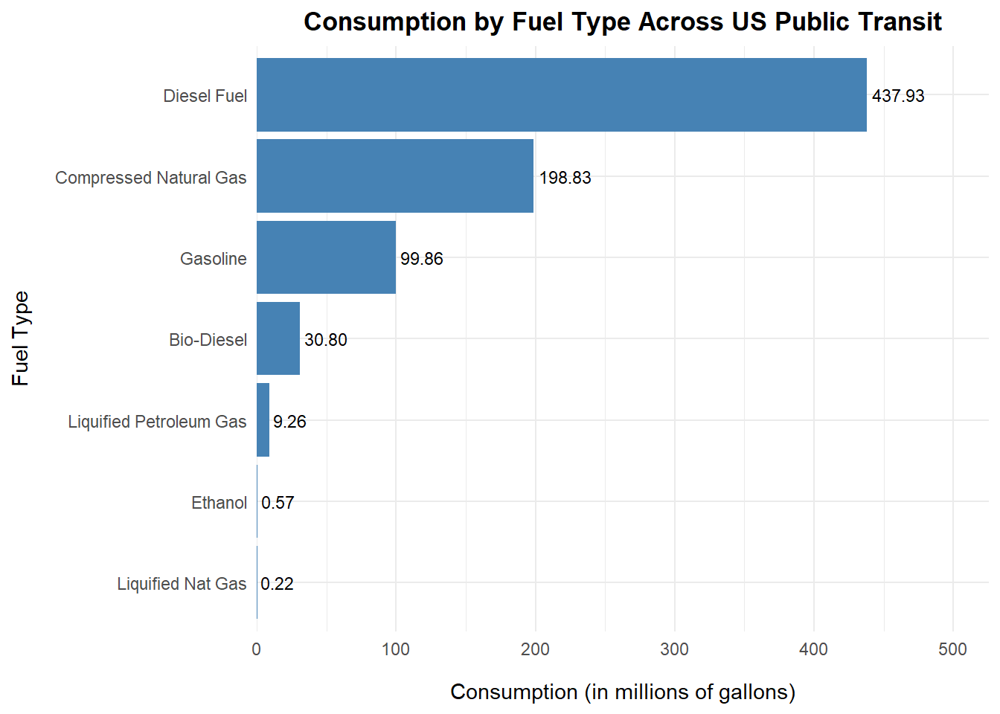
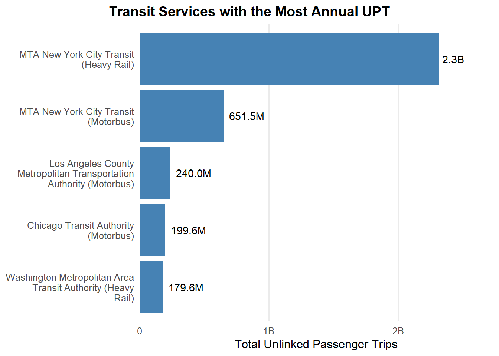
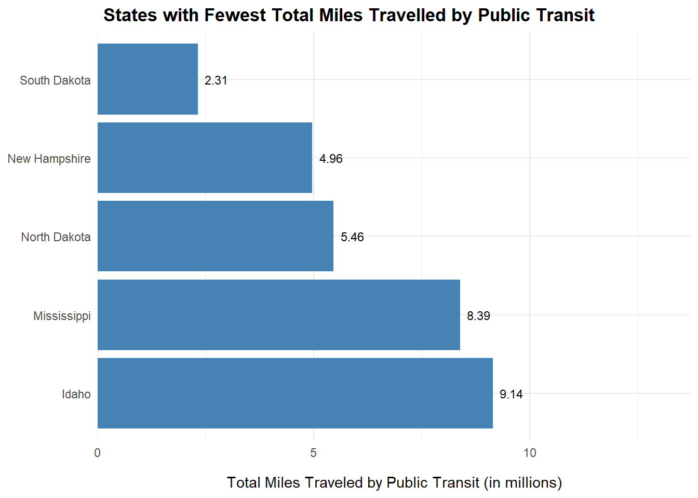
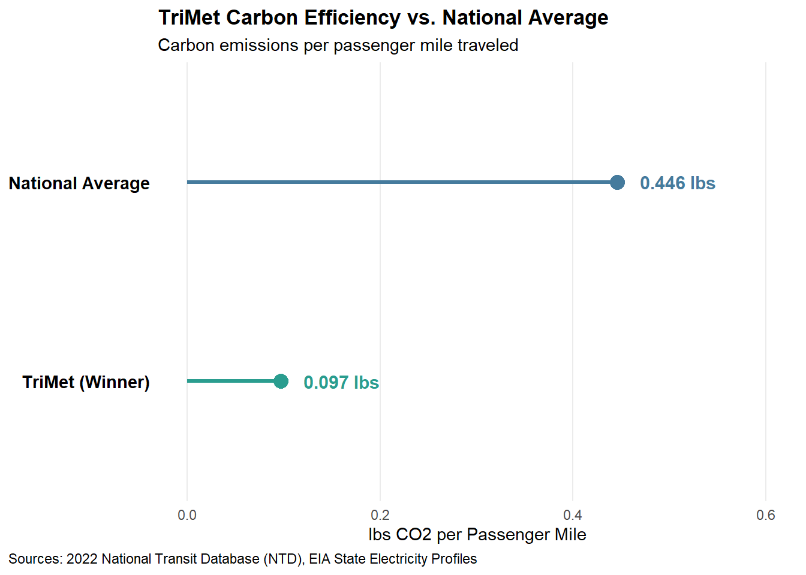
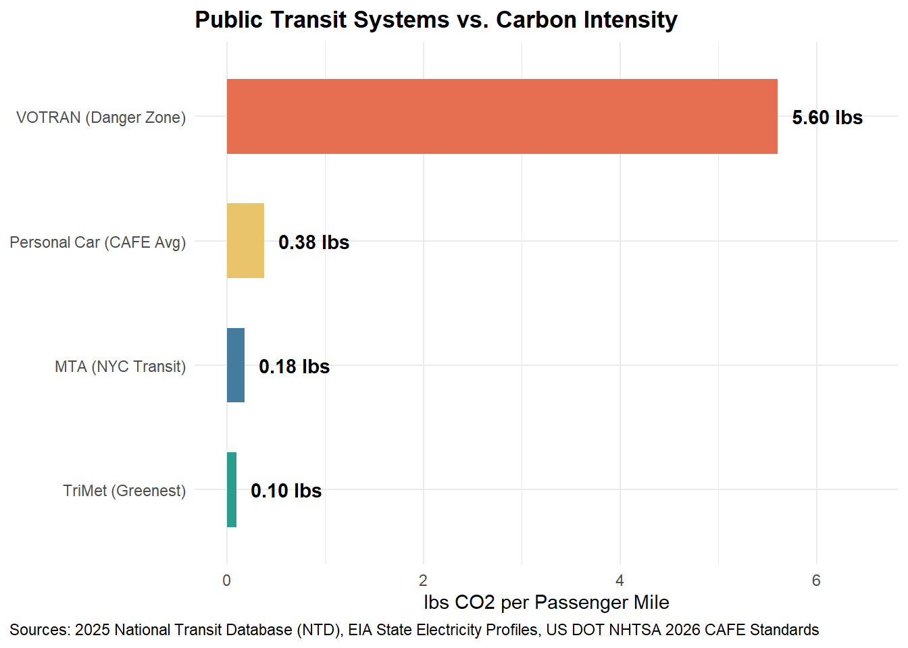
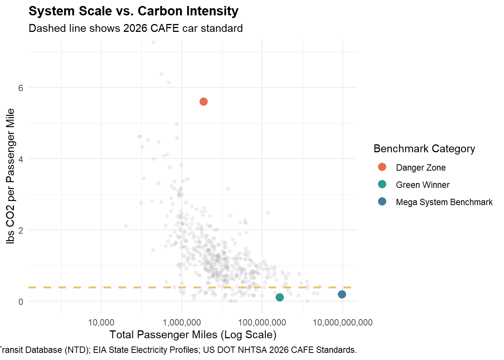

Identifying Environmentally Responsible US Public Transit Systems
Mini-Project 02
Author
Khushi Gandhi
Overview
In the modern-day, resource consumption is increasing exponentially leading to mass depletion, pollution and overall, adverse impacts on the environment. As society begins to value sustainable practices, industries are forced to reevaluate resource usage. For the transportation industry, public transit is a safer, environmental friendly alternative to driving for example. However, while an individual train ride has less effect than a personal car, many public transit agencies do not have green practices.
This impact is measured by CO2 emissions. As defined by the U.S. Energy Information Administration, carbon intensity refers to the “amount of carbon by weight emitted per unit of energy consumed”. In an emissions context, a higher carbon intensity means more CO2 emissions, which is not ideal for industries with significant energy consumption (like public transit).
At Green Transit Alliance (GTA), we value green practices in the transportation industry. That is why annually, we recognize public transit agencies with the “greenest” outcomes. Our decisions are based on a comprehensive analysis of three federal sources which will be discussed in an upcoming section.
The US Energy Information Administration is a repository for energy data across the United States. For the purpose of this project, Green Transit Alliance is interested in the summaries for state electricity profiles. The code above does this, storing the result in a data frame titled EIA_SEP_REPORT.
Each entry represents one state with information regarding pounds of carbon dioxide emissions per megawatt hour, primary sources of electricity generation, average retail prices of electricity and total generation capacity. Eventually this data will be coupled with information on public transit agencies to understand different energy sources they use as a fraction of total electricity consumption at the state level.
It is likely some type of joining function will be used. The most probable option is inner_join which will match columns present across multiple data sets. While the NTD data will be discussed later on, state data will be available. Given such, EIA_SEP_REPORT will likely be joined on the state or abbreviation column to gain a state-level picture on usage of fuel/electricity and carbon emissions by public transit agencies. Filters used depend on the analysis being conducted but it is possible they will be used to compare carbon emissions and electricity across various states.
National Transit Database
The National Transit Database (NTD) is a repository for publicly available data on the finances, operations and assets in American public transit systems. It is managed by the Federal Transportation Administration (FTA). For Green Transit Alliance, information regarding how public transit agencies consume fuel and the amount of electricity they use as well. The services provided by transit systems are of interest as well.
Energy Consumption
Code
load_ntd_energy <-function(){library(readxl)library(httr2)library(tidyverse)library(fs)# Create 'data/mp02' directory if not already present DATA_DIR <- fs::path("data", "mp02") fs::dir_create(DATA_DIR, recurse=TRUE) NTD_ENERGY_FILE <- fs::path(DATA_DIR, "2025_ntd_energy.xlsx")if(!fs::file_exists(NTD_ENERGY_FILE)){library(httr2)request("https://www.transit.dot.gov/") |>req_url_path("sites","fta.dot.gov","files","2026-09","2025 Energy Consumption_260806.xlsx") |>req_headers(`User-Agent`="Mozilla/5.0 (Macintosh; Intel Mac OS X 10.15; rv:149.0) Gecko/20100101 Firefox/149.0") |>req_perform(NTD_ENERGY_FILE) }if(file.info(NTD_ENERGY_FILE)$size <1e4){cat("I was unable to download the NTD Energy File. Please try again.\n")stop("Download failed. Please delete the corrupted file by running `unlink('data/mp02/2025_ntd_energy.xlsx')` and try again.") } to_numeric_fill_0 <-function(x){ x <-if_else(x =="-", NA, x)replace_na(as.numeric(x), 0) }read_excel(NTD_ENERGY_FILE) |>select(-c(`Reporter Type`, `Reporting Module`, `Gallons of Other Fuel`, `Other Fuel Description`)) |>mutate(across(-c(`Agency Name`, `Mode`,`TOS`), to_numeric_fill_0)) |>group_by(`NTD ID`, `Mode`, `Agency Name`) |>summarize(across(where(is.numeric), sum), .groups ="keep") |>mutate(ENERGY =sum(c_across(c(where(is.numeric))))) |>filter(ENERGY >0) |>select(-ENERGY) |>ungroup()}NTD_ENERGY <-load_ntd_energy()
The code above forms the dataset NTD_ENERGY which contains information on different transit agencies, their locations, the types of fuel they consume, in what amounts, and the amount of electricity used as well. Some of the fuel types reported include gasoline, kerosene, biodiesel, and hydrogen to name a few. The electricity usage is reported in two metrics - electricity propulsion and battery usage. These two categories draw on the distinction between how electricity is acquired. Another important part of this data is the Mode column which specifies how services in transit agencies are provided. While these are currently listed as two letter abbreviations, they will be recorded in a future step according to the NTD Reporting Policy Manual.
As previously mentioned with the EIA data, an inner_join is the most appropriate for this data. While the NTD_ENERGY energy contains many more entries on different public transit agencies (local, citywide, etc.), understanding their resources consumption as a part of overall state electricity consumption is important to understand which transit agencies are the greenest.
Transit Service Provided
Code
load_ntd_service <-function(){library(httr2)library(tidyverse)library(fs)# Create 'data/mp02' directory if not already present DATA_DIR <- fs::path("data", "mp02") fs::dir_create(DATA_DIR, recurse=TRUE) NTD_SERVICE_FILE <- fs::path(DATA_DIR, "2025_ntd_service.csv")if(!fs::file_exists(NTD_SERVICE_FILE)){library(httr2)request("https://data.transportation.gov/resource/4fir-qbim.csv") |>req_url_query(`$query`=paste("SELECT `_5_digit_ntd_id` AS `NTD_ID`", "`max_agency` AS `AGENCY`","`max_reporter_type` AS `reporter_type`","`max_organization_type` AS `organization_type`","`max_city` AS `city`","`max_state` AS `state`","`mode`","`type_of_service`","`max_primary_uza_code` as `uza_code`","`max_primary_uza_name` as `uza_name`","`max_primary_uza_area_sq_miles` as `uza_sq_miles`","`max_primary_uza_population` as `uza_population`","`max_service_area_sq_miles` as `service_area_sq_miles`","`max_service_area_population` as `service_area_population`","`questionable_record` as `flagged_likely_inaccurate`","`sum_unlinked_passenger_trips_upt` as `total_upt`","`sum_passenger_miles` WHERE caseless_one_of(`report_year`, '2025') limit 50000", sep=",")) |>req_headers(`User-Agent`="Mozilla/5.0 (Macintosh; Intel Mac OS X 10.15; rv:149.0) Gecko/20100101 Firefox/149.0") |>req_perform(NTD_SERVICE_FILE) }if(file.info(NTD_SERVICE_FILE)$size <1e4){cat("I was unable to download the NTD Service File. Please try again.\n")stop("Download failed. Please delete the corrupted file by running `unlink('data/mp02/2025_ntd_service.xlsx')` and try again.") }read_csv(NTD_SERVICE_FILE) |>mutate(flagged_likely_inaccurate =!is.na(flagged_likely_inaccurate))}NTD_SERVICE <-load_ntd_service()
The NTD_SERVICE data contains information on passenger trips across different transit services. Each entry corresponds to a different service by a specific agency. The transit services reported are the same mode column from the NTD_ENERGY data. Given such they will also have to be recoded.
However, the focus here is on how different services are serving different areas across the United States. There are columns titled uza_sqmiles/uza_population and service_area_sq_miles/service_area_population.These metrics specify how different transit systems are serving the public and in which amounts. There are also columns that have flags for inaccurate data. It is highly likely we will omit these records in our analysis to ensure fair, accurate reporting.
Lastly, two significant metrics reported in this data are total_upt and sum_passenger_miles. total_upt represents unlinked passenger trips which means that one trip regardless of how many transfers will count as one UPT. For example if you take two trains to reach a destination it still counts as one UPT because it is one trip in two segments. On the other hand, sum_passenger_miles reports the cumulative miles traveled by all passengers in that transit system by a specific mode of transit.
An initial understanding of the data was conducted using the glimpse() and skim() functions whose outputs are not included in the report. However, this understanding is essential to conceptualize how different data reports connect and contribute to the broader picture of green public transit.
The main concern here was translating the mode column in the NTD_ENERGY and NTD_SERVICE data sets into something more readable. As stated previously, the mode columns are originally reported as two letter abbreviations whose full forms represent various transit services. To understand which transit services are reported, the list of distinct values for each dataset was pulled and each of those abbreviations was translated into its full form. The abbreviations are shown in the code above and can also be accessed through the NTD Reporting Policy Manual.
Data Integration and Initial Exploration
EIA State Electricity Profiles
Most Expensive Retail Electricity
Which 5 states have the most expensive retail electricity?
Code
# Filter out the five states with the highest electricity prices per megawatt-hourEIA_SEP_REPORT |>slice_max(electricity_price_MWh, n=5) |># Use reorder to have the bar in descending orderggplot(aes(reorder(state, -electricity_price_MWh),electricity_price_MWh)) +geom_col(fill ="steelblue") +geom_text(aes(label =dollar(electricity_price_MWh)), vjust =-0.5) +scale_y_continuous(expand =expansion(mult =c(0,0.15))) +theme_minimal() +labs(title="States with the Most Expensive Retail Electricity",x="State", y ="Price per Megawatt-Hour ($)") +theme(plot.title =element_text(face ="bold", size =13, hjust =0.5),axis.title.x =element_text(margin =margin(t=12)),axis.title.y =element_text(margin =margin(r=12)) )
Hawaii has the most expensive retail electricity at $380 per megawatt-hour. Following Hawaii, in order of descending price, are California, Connecticut, Rhode Island and Massachusetts.
‘Dirtiest’ Electricity Mix
Which 5 states have the ‘dirtiest’ electricity mix?
Code
# Filter out the five states with the highest CO2 per megawatt-hourEIA_SEP_REPORT |>slice_max(CO2_MWh, n=5) |># Select only the relevant, needed columnsselect(c("state", "CO2_MWh", "primary_source")) |>gt() |>cols_align(align ="left", columns ="CO2_MWh") |>fmt_number(CO2_MWh, decimals =0) |>cols_label(state=md("**State**"),CO2_MWh =md("**CO~2~ Emissions (lbs/MWh)**"), primary_source =md("**Primary Source**")) |>tab_header(title="States with the 'Dirtiest' Electricity Mix")
States with the 'Dirtiest' Electricity Mix
State
CO2 Emissions (lbs/MWh)
Primary Source
West Virginia
1,912
Coal
Kentucky
1,744
Coal
Wyoming
1,724
Coal
Missouri
1,456
Coal
Hawaii
1,426
Petroleum
The ‘dirtiest’ electricity mix is defined as having high carbon emissions. Therefore, in other words, this question asks which states have the highest CO2 emissions in pounds per megawatt-hour. West Virginia has the ‘dirtiest’ electricity mix at 1,912 pounds of CO2 per megawatt-hour. West Virginia is followed by Kentucky, Wyoming, Missouri and Hawaii in descending order. Notably, four of the top five states with the ‘dirtiest’ electricity mix use coal as their primary source.
Average Co2 per Megawatt-Hour
On average, how many pounds of CO2 are emitted per MWh of electricity produced in the US?
Code
# Set up variable to call on in inline codeus_CO2_emission = EIA_SEP_REPORT |># Compute a weighted mean for total CO2 emissions as a fraction of total generation (both in mwH)# Use weighted mean over simple mean to ensure states with smaller/bigger consumption are accurately represented in average CO2 emissionssummarise(CO2_avg =weighted.mean(CO2_MWh, generation_MWh, na.rm =TRUE)) |>pull(CO2_avg)
On average, 785 pounds of CO2 are emitted per megawatt hour of electricity produced in the United States.
Rarest Primary Energy Sources in the US
What are the three rarest primary energy sources in the US? What is the associated cost of electricity associated with each source and in what states are they used?
Code
# Group by primary sourceEIA_SEP_REPORT |>group_by(primary_source) |># Summarize number of states in each group and compute the average electricity price across those statessummarise(state_count =n_distinct(state), states_use =toString(state),avg_price =mean(electricity_price_MWh)) |># Pull the three sources where the least number of states are using themslice_min(state_count, n=3) |>mutate(avg_price =round(avg_price, 2)) |>gt() |>cols_label(primary_source=md("**Primary Source**"),states_use =md("**States Using this Source**"),state_count=md("**State Count**"),avg_price =md("**Average Electricity Price ($/MWh)**")) |>tab_header(title="Rarest Primary Energy Sources in the US")
Rarest Primary Energy Sources in the US
Primary Source
State Count
States Using this Source
Average Electricity Price ($/MWh)
Petroleum
1
Hawaii
380.0
Hydroelectric
4
Idaho, Oregon, Vermont, Washington
122.9
Wind
4
Iowa, Kansas, New Mexico, South Dakota
101.5
The rarest primary energy source in the US is petroleum and it is used by only one state that has an average electricity price of $380 per megawatt hour.
Both the second and third rarest primary sources are used by four states and they are hydroelectric and wind energy. Idaho, Oregon, Vermont, and Washington use hydroelectric energy with an average electricity price of $122.90 per megawatt hour.
Wind energy is used by Iowa, Kansas, New Mexico and South Dakota with an average price of $101.50 per megawatt hour. Notably, the rarest primary source, petroleum, is used by Hawaii which is also the state with the highest average electricity price across the country.
NTD Energy Usage
Visualizing Fuel Usage
Across all US public transit, visualize the amounts of each type of fuel used.
Code
NTD_ENERGY |># Change data format so eventually data can be grouped by fuel typepivot_longer(cols =starts_with("Gallons"), names_to ="fuel_type", values_to ="gallons", names_prefix ="Gallons of ") |>group_by(fuel_type) |># Aggregate the amount of gallons used across individual fuel type groupssummarise(total_gallons =sum(gallons, na.rm =TRUE)/1000000) |># Omit any fuel types that were unusedfilter(total_gallons >0) |>ggplot(aes(total_gallons, reorder(fuel_type, total_gallons))) +geom_col(fill ="steelblue") +geom_text(aes(label =comma(total_gallons)), hjust =-0.1, size =3) +scale_x_continuous(labels =label_comma(), expand =expansion(mult =c(0,0.2))) +theme_minimal() +labs(title="Consumption by Fuel Type Across US Public Transit",x="Consumption (in millions of gallons)", y ="Fuel Type") +theme(plot.title =element_text(face ="bold", size =13, hjust =0.5),axis.title.x =element_text(margin =margin(t=12)),axis.title.y =element_text(margin =margin(r=12)))

The most consumed fuel type across US public transit is diesel fuel at 437.93 million gallons. Second to it is compressed natural gas but in terms of gallons consumed it is only 45.4% of diesel fuel at 198.83 million gallons. This is a massive difference and it is plausible that diesel fuel is the standard for fuel type used by transportation systems.
In third place is gasoline, but that value is half that of compressed natural gas usage. Following it are biodiesel, liquid petroleum gas, ethanol and lastly liquid natural gas, which is only about 220,000 gallons.
Least Common Fuel Source for U.S. Public Transit
What is the least commonly used fuel source for US public transit?
Code
# Set up variable to call on in inline codeleast_common = NTD_ENERGY |># Change data format so eventually data can be grouped by fuel typepivot_longer(cols =starts_with("Gallons"), names_to ="fuel_type", values_to ="gallons", names_prefix ="Gallons of ") |>group_by(fuel_type) |># Aggregate the amount of gallons used across individual fuel type groupssummarise(total_gallons =sum(gallons, na.rm =TRUE)) |># Omit any fuel types that were unusedfilter(total_gallons >0) |># Find the fuel type with the lowest consumptionslice_min(total_gallons) |># Extract the name of that fuel typepull("fuel_type")
The least commonly used fuel source for US public transit is Liquified Nat Gas. This conclusion is also available in the previous tasks where all fuel types were graphically compared.
NTD Service
Transit Services with the Most Annual UPT
Which five transit services have the most UPT annually?
Code
top_5_upt_data = NTD_SERVICE |># Remove all possible inaccurate entriesfilter(!flagged_likely_inaccurate) |># Format agency name to only include name and omit unnecessary detailsmutate(AGENCY =str_remove(AGENCY, ", dba:.*")) |># Group by agency and mode to figures out with agencies in what services have the most UPTgroup_by(AGENCY, mode) |># Sum total upt across these groupssummarise(upt =sum(total_upt, na.rm =TRUE), .groups ="drop") |># Add a column including the agency name and transit service for a UPT valuemutate(service =paste0(AGENCY, " (", mode ,")")) |># Extract top five UPTsslice_max(upt, n=5)# Reorder service and UPT to show values in descending orderggplot(top_5_upt_data, aes(x = upt, y =reorder(service, upt))) +geom_col(fill ="steelblue") +geom_text(aes(label =label_number(accuracy =0.1, scale_cut =cut_short_scale())(upt)),hjust =-0.15,size =3.8 ) +scale_x_continuous(labels =label_number(scale_cut =cut_short_scale()),expand =expansion(mult =c(0, 0.18)) ) +scale_y_discrete(labels =function(x) str_wrap(x, width =28) ) +labs(title ="Transit Services with the Most Annual UPT",x ="Total Unlinked Passenger Trips",y =NULL ) +theme_minimal(base_size =12) +theme(plot.title.position ='plot',plot.title =element_text(face ="bold", size =14, hjust =0.5 ),panel.grid.major.y =element_blank(),panel.grid.minor =element_blank() )

MTA New York City Transit holds the top two spots for transit services with the most annual UPT. Heavy rails sits at the top with 2.3 billion UPTs annually with motorbus in second place at 661.5 million.
Following MTA at number three is Los Angeles County’s Metropolitan motorbus transit service at 240 million UPTs. Next is Chicago Transit Authority’s motorbus service at about 200 million and at fifth is Washington D.C.’s heavy rail system at about 180 million UPTs.
It is understandable that most of the five services with the highest UPTs are in population dense areas. It also makes sense that three of these spots are for motorbus services. While cities are expanding their heavy rail systems, they are still not as extensive as bus routes are. Logically, bus routes are more manageable and there is more flexibility in how they are designed/the places they reach.
One important data nuance to consider is how the NTD tracks UPTs across different transit services. For example, switching from a bus to a train is still considered a transfer in New York City. Does it count as two UPTs since they are different transit systems or because it is considered a transfer it is only one passenger trip?
Average Trip Length for MTA New York City Transit
What is the average trip length of a trip on MTA NYC?
Code
# Set up variable to call on in inline codeavg_trip_length = NTD_SERVICE |># Remove all possible inaccurate entries# Only keep entries that have "MTA New York City Transit" in the agency namefilter(!flagged_likely_inaccurate, str_detect(AGENCY, "MTA New York City Transit")) |># Divide sum of passenger miles across the MTA by the total number of trips takensummarise(avg_trip =sum(sum_passenger_miles)/sum(total_upt)) |>pull(avg_trip)
The average trip length for MTA New York City Transit is 3.2 miles.
Least Miles Traveled by Public Transit
Which five states has the fewest total miles traveled by public transit?
Code
# Remove all possible inaccurate entriesNTD_SERVICE |>filter(!flagged_likely_inaccurate) |># Only include states by using built in 'state.abb' (no territories and other regions)filter(state %in% state.abb) |>group_by(state) |># Across each state, sum total passenger miles# Divide by 1 million to make graphical reporting easiersummarise(tot_miles =sum(sum_passenger_miles, na.rm =TRUE)/1000000) |>filter(tot_miles >0) |># Extract the five states with the fewest total miles traveledslice_min(tot_miles, n =5) |># Add a column with the full state name since original data only contained abbreviationsmutate(full_state =set_names(state.name, state.abb)[state]) |># Reorder states to show in acsending orderggplot(aes(tot_miles, reorder(full_state, -tot_miles))) +geom_col(fill ="steelblue") +geom_text(aes(label =comma(tot_miles)), hjust =-0.3, size =3) +scale_x_continuous(labels =label_comma(), expand =expansion(mult =c(0,0.5))) +theme_minimal() +labs(title="States with Fewest Total Miles Travelled by Public Transit",x="Total Miles Traveled by Public Transit (in millions)",y =NULL) +theme(plot.title.position ="plot",plot.title =element_text(face ="bold", size =13, hjust =0.5),axis.title.x =element_text(margin =margin(t=12)))

South Dakota has the fewest total miles traveled by public transit at 2.31 million miles. Following South Dakota, is New Hampshire, North Dakota, Mississippi, and Idaho in that order.
Something worth noting is that originally, the state with the fewest total miles by public transit was Wyoming at zero. This was a confusing metric because looking at Wyoming‘s records they did have entries for everything else except total passenger miles. Upon further investigation, it was discovered that the FTA has different reporting regulations for agencies according to their size. The two levels are ‘full reporter’ and ‘reduced reporter’. While it is not known why Wyoming did not report these metrics, we can assume that it may be a personal choice to not include passenger miles.
Data Integration
How many UPTs were recorded in states where the primary energy source was nuclear power?
Los Angeles–Long Beach–Anaheim, CA was the metro area where the most gallons of bio-diesel used by public transit agencies.
Data Analysis
Calculate Total Emissions
Compute the total emissions associated with each Agency + Mode pair.
Code
# Subset EIA data to include only state abbreviation and CO2 per megawatt hour columnsgrid_intensity = EIA_SEP_REPORT |>select(abbreviation, grid_CO2 = CO2_MWh)energy_mode = NTD_ENERGY |># Add column with ntd id as an integer (both NTD datasets have different ways of reporting ID)mutate(join_id =as.integer(`NTD ID`)) |># Create groups for the same agencies with the same transit services group_by(join_id, Mode) |># Sum fuel consumption by individual fuel type across transit servicessummarise(diesel_gal =sum(`Gallons of Diesel Fuel`, na.rm =TRUE),biodiesel_gal =sum(`Gallons of Bio-Diesel`, na.rm =TRUE),gasoline_gal =sum(`Gallons of Gasoline`, na.rm =TRUE),cng_gal =sum(`Gallons of Compressed Natural Gas`, na.rm =TRUE),lng_gal =sum(`Gallons of Liquified Nat Gas`, na.rm =TRUE),lpg_gal =sum(`Gallons of Liquified Petroleum Gas`, na.rm =TRUE),bunker_gal =sum(`Gallons of Bunker Fuel`, na.rm =TRUE),kerosene_gal =sum(`Gallons of Kerosene`, na.rm =TRUE),ethanol_gal =sum(`Gallons of Ethanol`, na.rm =TRUE),electric_kwh =sum(`Kilowatt hours of Electric Propulsion`, na.rm =TRUE) +sum(`Kilowatt hours of Electric Battery`, na.rm =TRUE),.groups ="drop" )agencymode_emissions = NTD_SERVICE |># Remove all possible inaccurate entriesfilter(!flagged_likely_inaccurate) |># Add column with ntd id as an integer (both NTD datasets have different ways of reporting ID)mutate(join_id =as.integer(NTD_ID)) |># Group by following columns# Include both join_id and agency so they appear as separate columnsgroup_by(join_id, AGENCY, state, mode) |># Sum total UPT and passenger miles across agency + modesummarise(tot_upt =sum(total_upt, na.rm =TRUE),tot_pmt =sum(sum_passenger_miles, na.rm =TRUE),.groups ="drop" ) |># Join emissions with energy mode data on the join_id and mode/Mode columns# Use inner join to keep entries with only both service and energy datainner_join(energy_mode, by =join_by(join_id == join_id, mode == Mode)) |># Use a left join to match records by stateleft_join(grid_intensity, by =join_by(state == abbreviation)) |># Add a column to compute the emissions for each fuel typemutate(em_diesel = diesel_gal *22.45,em_bio = biodiesel_gal * (9.45*2.2046),em_gasoline = gasoline_gal *18.73,em_cng = cng_gal * (120.85/10),em_lng = lng_gal * (4.50*2.2046),em_lpg = lpg_gal *12.68,em_bunker = bunker_gal * (11.27*2.2046),em_kerosene = kerosene_gal *21.78,em_ethanol = ethanol_gal * (5.75*2.2046),# Compute carbon emission by converting to mwh and multiplying by carbon intensity by stateem_electric = (electric_kwh /1000) * grid_CO2,total_emissions_lbs = em_diesel + em_bio + em_gasoline + em_cng + em_lng + em_lpg + em_bunker + em_kerosene + em_ethanol + em_electric )# Some data conversions for emissions were also pulled from the EPA# https://www.epa.gov/climateleadership/ghg-emission-factors-hub
State summary profiles as well as different fuel type consumption and their relevant carbon emissions are analyzed in the code above. The electricity from battery usage and from propulsion were combined to understand total electricity usage of these entries. Different fuel types were also converted to their respective carbon emissions using EIA and EPA (Environment Protection Agency) conversion rates. Those emissions for individual agencies across various transit services were then aggregated and divided by total unlinked passenger trips and passenger miles.
Relate Total Emissions and Passenger Service
Normalizing total emissions for each Agency + Mode pair by the actual size of the transit agency.
Across unlinked passenger trips and passenger miles traveled the results for the greenest transit agencies were the same.
Large: Tri-County Metropolitan Transportation District of Oregon
For unlinked passenger trips, the TriMet system was emitting about 0.4 pounds of carbon per UPT out of 65.6 million total trips . By passenger miles traveled, the TriMet system had 0.097 pounds of carbon emissions per unit out of almost 270 million total passenger miles.
Medium: Anaheim Transportation Network
For unlinked passenger trips, Anaheim Regional Transportation was emitting about 0.126 pounds of carbon per UPT out of 8.2 million total trips . By passenger miles traveled, Anaheim Regional Transportation had 0.09 pounds of carbon emissions per unit out of almost 11.5 million total passenger miles.
Small: City of Seattle
For unlinked passenger trips, the Seattle Center Monorail was emitting about 0.058 pounds of carbon per UPT out of 2.29 million total trips . By passenger miles traveled, the Seattle Center Monorail had 0.064 pounds of carbon emissions per unit out of almost 2.06 million total passenger miles.
Identify ‘Greenest’ Transit Agencies
Award 1: Greenest Transit Agency
Greenest Transit Agency by Passenger Miles
Agency: Tri-County Metropolitan Transportation District of Oregon (TriMet)
Metric: 0.4 lbs of CO2 per UPT and 0.097 lbs of CO2 per passenger mile
Metric: 0.126 lbs of CO2 per UPT and 0.09 lbs of CO2 per passenger mile
Award 2: Danger-Zone Award
Highest Carbon Intensity per Passenger Mile
Code
agency_efficiency |># PMT greater than 500,000 to subset system that are consistenly serving passengers throughout the yearfilter(state %in% state.abb, total_pmt >=500000) |>slice_max(per_pmt, n =1) |>select(AGENCY, state, per_upt, per_pmt) |>gt() |>fmt_number(columns =c(per_upt, per_pmt), decimals =3) |>cols_label(AGENCY =md("**Agency**"),state =md("**State**"),per_upt =md("**CO~2~ Emissions (lbs/UPT)**"),per_pmt =md("**CO~2~ Emissions (lbs/PMT)**") ) |>tab_header(title ="The Danger Zone Award",subtitle ="Highest Emissions per Passenger Mile" )
The Danger Zone Award
Highest Emissions per Passenger Mile
Agency
State
CO2 Emissions (lbs/UPT)
CO2 Emissions (lbs/PMT)
County of Volusia, dba: VOTRAN
FL
57.671
5.599
Agency: County of Volusia (VOTRAN)
Metric: 57.67 lbs of CO2 per UPT and 5.6 lbs of CO2 per passenger mile
Green Transit Alliance Annouces 2026 Winners for the Annual GTA VI Awards
Green Transit Alliance is honored to announce the annual winners for the 2026 GTA VI awards.
This year, we have two categories. The first is our usual “Greenest Transit Agency”. For the second, we decided to bring awareness to agencies that can do better. The metrics in this analysis were calculated using the Energy Information Administration’s and National Transit Database’s records, both of which are federal sources.
Without further ado, here are the winners!
Award 1: Greenest Transit Agency
The award for the Greenest Transit Agency agency goes to the Tri-County Metropolitan District of Oregon or TriMet!
This transit system achieved an impressive 0.4 pounds of CO2/UPT and 0.097 pounds CO2/PMT. While there were other contenders with similar or lower rates, the TriMet serviced 269,801,597 passenger miles. At this scale, it is an impressive feat to have achieved these low carbon emission rates.
These metrics were acquired by analyzing state summary profiles as well as different fuel type consumption and their relevant carbon emissions. The electricity from battery usage and from propulsion were combined to understand total electricity usage of these entries. The amount of fuel types including diesel, biodiesel, gasoline and others, were converted to their respective carbon emissions rates using EIA and EPA conversion rates. Those emissions for individual agencies across various transit services were then aggregated and divided by total unlinked passenger trips and passenger miles to understand on carbon emissions on a per UPT and per mile basis.
Code
national_averages = agency_efficiency |>summarise(weighted_avg_upt =sum(total_emissions_lbs, na.rm =TRUE) /sum(total_upt, na.rm =TRUE),weighted_avg_pmt =sum(total_emissions_lbs, na.rm =TRUE) /sum(total_pmt, na.rm =TRUE) )# CAFE 2026 standard baseline# 18.73 from EIA conversion tablecafe_car=18.73/49trimet_vs_nat =data.frame(entity =c("TriMet (Winner)", "National Average"),lbs_pmt =c(0.097, national_averages$weighted_avg_pmt))ggplot(trimet_vs_nat, aes(x = lbs_pmt, y =reorder(entity, lbs_pmt), color = entity)) +geom_segment(aes(x =0, xend = lbs_pmt, y = entity, yend = entity), linewidth =1.2, show.legend =FALSE) +geom_point(size =4, show.legend =FALSE) +geom_text(aes(label =sprintf("%.3f lbs", lbs_pmt)), hjust =-0.3, fontface ="bold", size =4, show.legend =FALSE) +scale_color_manual(values =c("TriMet (Winner)"="#2a9d8f","National Average"="#457b9d" ) ) +labs(title ="TriMet Carbon Efficiency vs. National Average",subtitle ="Carbon emissions per passenger mile traveled",x ="lbs CO2 per Passenger Mile",y =NULL,caption ="Sources: 2022 National Transit Database (NTD), EIA State Electricity Profiles" ) +theme_minimal() +theme(plot.title =element_text(face ="bold"),plot.caption.position ="plot",plot.caption =element_text(hjust =0),axis.text.y =element_text(face ="bold", size =11, color ="black"),panel.grid.minor =element_blank(),panel.grid.major.y =element_blank() ) +expand_limits(x =max(trimet_vs_nat$lbs_pmt) *1.35)

We can understand the scale of TriMet’s achievements by comparing it to the Corporate Average Fuel Economy standard baseline for the carbon emissions emitted by the average personal vehicle at about 0.38 pounds CO2/PMT. This means that TriMet achieved a 74.62% reduction in carbon emissions.
Furthermore, the national carbon emission rate for public transit agencies sat at about 0.446 pounds of CO2/PMT which is significantly higher than TriMet’s rate as well.
An honorable mention also goes to the Anaheim Transportation Network who also achieved low carbon emission rates but at a medium size agency level.
Award 2: Danger-Zone Award
Let’s give it up for the County of Volusia, also known as VOTRAN from Florida for a staggering 5.6 pounds of carbon emitted per passenger mile. VOTRON, you are in the danger zone!
This metric was calculated using the same method described for the Greenest Transit Award. Each fuel type was converted to the respective carbon emission rate and summed across the entire agency. The per passenger mile rate used for the Danger Zone Award is a result of aggregated total carbon emission per passenger mile over total passenger miles traveled.
To understand what a concerning metric this is, let’s compare VOTRON to other public transit agencies.
Code
mta_metrics = agency_efficiency |>filter(str_detect(AGENCY, "MTA New York City|New York City Transit")) |>select(AGENCY, state, per_pmt, per_upt, total_pmt, total_emissions_lbs)# CAFE 2026 standard baseline# 18.73 from EIA conversion tablecafe_car=18.73/49comparison_df =data.frame(entity =c("TriMet (Greenest)", "MTA (NYC Transit)", "Personal Car (CAFE Avg)", "VOTRAN (Danger Zone)"),lbs_pmt =c(0.097, 0.180, cafe_car, 5.600),category =c("Green Winner", "Mega System Benchmark", "CAFE Car", "Danger Zone"))ggplot(comparison_df, aes(x = lbs_pmt, y =reorder(entity, lbs_pmt), fill = category)) +geom_col(width =0.6) +geom_text(aes(label =sprintf("%.2f lbs", lbs_pmt)), hjust =-0.2, fontface ="bold") +scale_fill_manual(values =c("Green Winner"="#2a9d8f","Mega System Benchmark"="#457b9d","CAFE Car"="#e9c46a","Danger Zone"="#e76f51" )) +labs(title ="Public Transit Systems vs. Carbon Intensity",x ="lbs CO2 per Passenger Mile",y =NULL,caption ="Sources: 2025 National Transit Database (NTD), EIA State Electricity Profiles, US DOT NHTSA 2026 CAFE Standards" ) +theme_minimal() +theme(legend.position ="none",plot.caption.position ="plot",plot.caption =element_text(hjust =0),plot.title =element_text(face ="bold") ) +expand_limits(x =6.5)

In the bar chart above, there is a stark difference between VOTRON’s CO2/PMT and other reported agencies. It sits well above the CAFE, the TriMet, and to understand how a large agency operates, the MTA average (at 0.18 pounds of CO2/PMT). We can also look at this metric on a much larger scale through the plot shown below.
Code
highlights = agency_efficiency |>filter(str_detect(AGENCY, "Tri-County Metropolitan|Volusia|MTA New York City")) |>mutate(category =case_when(str_detect(AGENCY, "Tri-County") ~"Green Winner",str_detect(AGENCY, "MTA") ~"Mega System Benchmark",str_detect(AGENCY, "Volusia") ~"Danger Zone" ) )ggplot(agency_efficiency, aes(x = total_pmt, y = per_pmt)) +geom_point(alpha =0.2, color ="gray70") +geom_hline(yintercept = cafe_car, linetype ="dashed", color ="#e9c46a", linewidth =0.9) +geom_point(data = highlights, aes(color = category), size =3.5) +scale_color_manual(name ="Benchmark Category",values =c("Green Winner"="#2a9d8f","Mega System Benchmark"="#457b9d","Danger Zone"="#e76f51" ) ) +scale_x_log10(labels = scales::comma) +coord_cartesian(ylim =c(0, 7)) +labs(title ="System Scale vs. Carbon Intensity",subtitle ="Dashed line shows 2026 CAFE car standard",x ="Total Passenger Miles (Log Scale)",y ="lbs CO2 per Passenger Mile",caption ="Sources: 2025 National Transit Database (NTD), EIA State Electricity Profiles, US DOT NHTSA 2026 CAFE Standards" ) +theme_minimal() +theme(legend.position ="right",plot.title =element_text(face ="bold"),plot.caption.position ="plot",plot.caption =element_text(hjust =0) ) +expand_limits(y =6.5)

This plot highlights pounds of CO2/PMT for TriMet, VOTRON, and the MTA (mega system benchmark) and other major transit systems in the United States. TriMet sits well below the CAFE average, represented by the yellow dashed line, and most other US public transit agencies. The MTA achieves a much more significant total passenger mile count, but has higher emissions per passenger mile. However, it is notably below the CAFE average as well, despite serving billions of passengers annually.
Lastly, we look at VOTRON, the red dotted outlier. It does not serve a significant amount of passenger miles compared to other large transit agencies and still has a high carbon emissions rate per passenger mile.
VOTRON, you need to do better.
Until Next Year!
As a society we are facing resource depletion, mass pollution, and adverse environmental effects due to societal developments, and the increased need for resources.
As part of the transportation industry, we must take responsibility for how our operations affect and contribute to these issues. Those that are actively aware of the resources they use and are doing their best to lower carbon emission rates, bravo to you. Let’s work together to keep our planet green. Until next year!
NoteAI Usage Statement
Gemini was used to help write the code in this project, but all non-code text was generated without the use of any Generative AI tools.